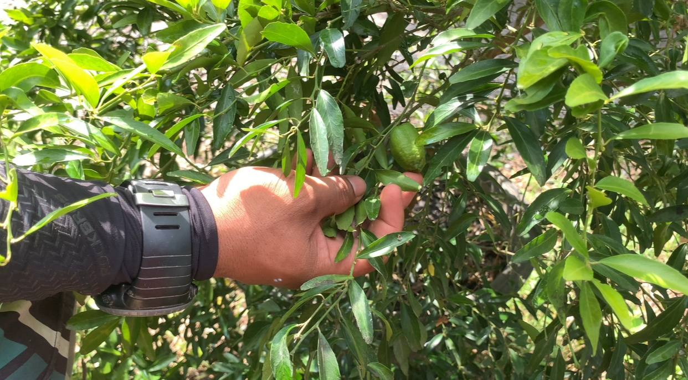

Peranan
Sebagai pemilik Super Fruit Valley, Robin Lim bertanggungjawab dalam menguruskan keseluruhan operasi ladang termasuk pembangunan kawasan, pengurusan tanaman, serta memastikan pengalaman pengunjung berada pada tahap yang baik.
Beliau juga merancang strategi untuk memastikan perniagaan ini terus berkembang sebagai destinasi agro pelancongan.
Sumbangan Kepada negeri Perlis

Super Fruit Valley telah memberi sumbangan kepada negeri Perlis, terutamanya dalam sektor pelancongan dan pertanian. Antara sumbangan utama ialah:
- Mempromosikan agro pelancongan di Perlis.
- Menarik pelancong ke negeri Perlis.
- Menggalakkan gaya hidup sihat melalui pemakanan buah-buahan.
- Memberi kesedaran tentang kepentingan pertanian dan alam semula jadi
Selain itu, ladang ini juga membantu meningkatkan ekonomi tempatan serta memberi peluang kepada masyarakat untuk lebih mengenali dunia pertanian.